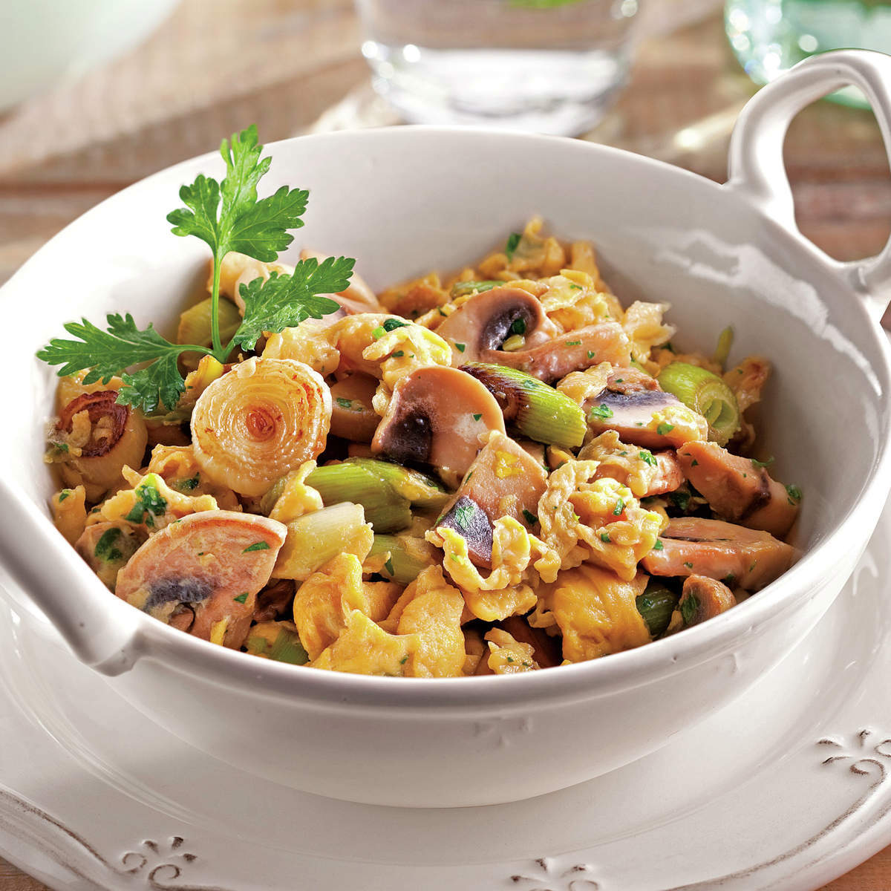

Scrambled Eggs with Young Garlic and Mushrooms

Easy and soooooo delicious
Ingredients
- 8 eggs
- 1 bounch of young garlic
- 200g mushrooms
- 2 tablespoons of olive oil
- Salt
- Pepper
- 2 springs of parsley
Steps
- Clean the young garlic by removing the roots and the darkest green parts. Wash, dry with paper towels, and cut into moderately thick slices.
- Clean the mushrooms by trimming the earthy part of the stem. Quickly rinse them under running water (without soaking them to prevent water absorption), then dry them thoroughly with paper towels and slice them.
- Wash and dry the parsley. Set aside a few leaves for decoration and finely chop the rest. Crack the eggs into a bowl, season with salt and pepper, and add the chopped parsley. Lightly whisk them with a hand whisk.
- Heat the olive oil in a pan over medium-high heat. Once hot, add the young garlic and mushrooms. Season with salt and pepper and sauté for about 5 minutes, stirring occasionally with a wooden spoon.
- Pour in the egg mixture and continue cooking, stirring constantly, until the eggs begin to set but remain soft and creamy.
- Serve immediately on plates or small casseroles, garnish with the reserved parsley, and enjoy!
Tip: Adding a splash of cherry while cooking the mushrooms gives the dish a deliciously special touch